Flagship series · crime dramedy / cyberpunk
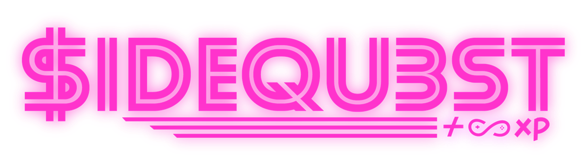
A broke grocery clerk reunites his crew of small-time crooks to chase fortune on Sidequest — a lawless dark-web gig marketplace secretly built by the ghost of the world’s most dangerous hacker: the father his own missing dad helped kill.
Powered by Pure Alacrity · Edit locked Aug 7 · Release aim Oct 7, 2026
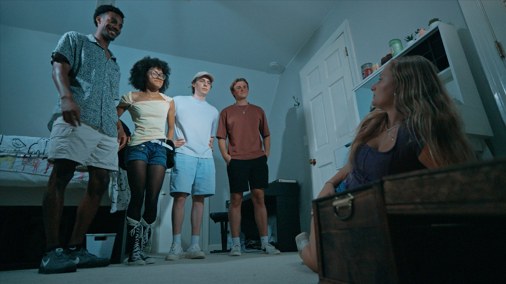
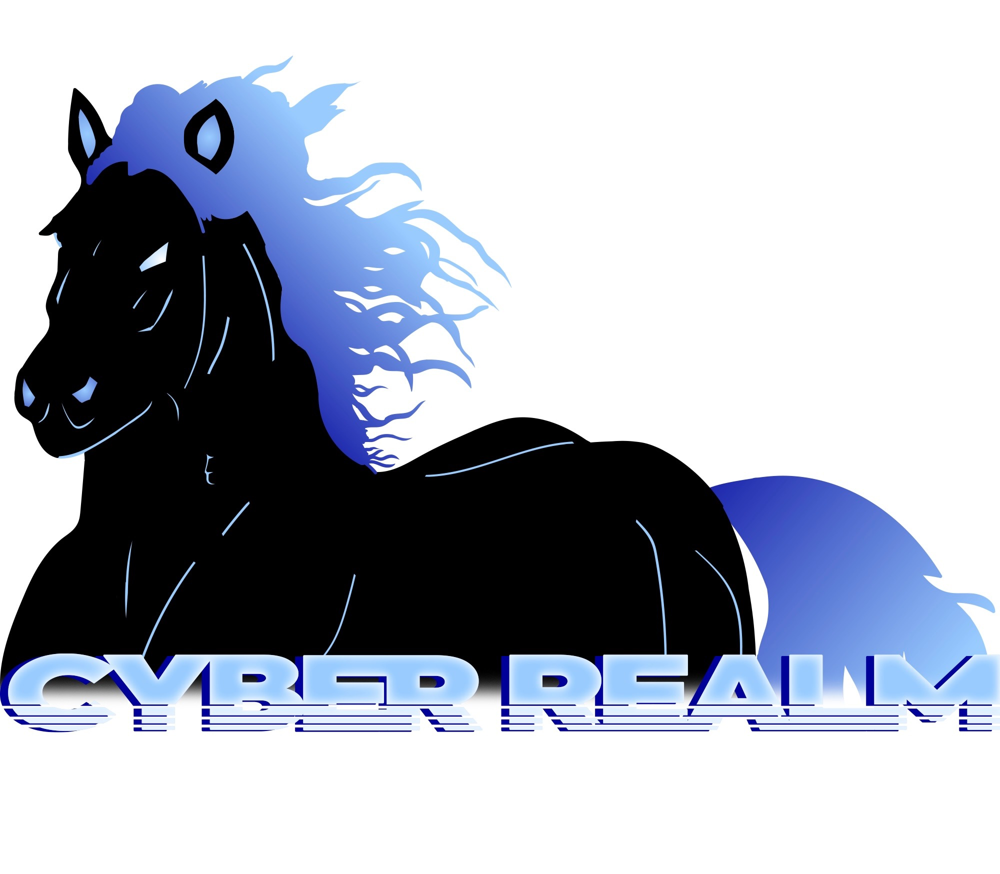
The thesis
Get rich. Or get deleted.
Atlanta energy × Mr. Robot paranoia × Guy Ritchie heist comedy — with a video-game interface and a mythology rooted in Igbo cosmology.
On the surface it is a crew chasing gigs. Underneath, the playground is a god’s trap: Sidequest is the public storefront of the Cyber Realm, and Adam Dawnbringer is the rope in a tug-of-war between his missing father and a dead hacker in the machine.
Nelson’s invitation still stands: “You gotta cheat the system if you want to win. How about a Sidequest?”
You can’t kill a system you’re already inside.
Season 1 shape
Four plots. One marketplace.
Season 1 runs four parallel tracks: the ABC Squad heist comedy, FBI Team 4B, the Family, and the Myth. Early episode titles include the refusal-of-the-call opener, Sharks and Minnows, and On Thin Ice.
ABC Squad
Adam reunites Brock, Chester, Diego, Eric, Felicia and Gemma for gigs that escalate faster than their morals can keep up.
FBI Cyber Realm
Agent Alexa and the taskforce chase a marketplace that looks like crime and behaves like theology.
Family & myth
Cain’s disappearance, Nelson’s recruitment, and the Trojan Stallion origin bleeding into every “simple” gig.
ABC Squad
The crew.
Principal cast of the flagship. Full Season 1 credits list 84 people.
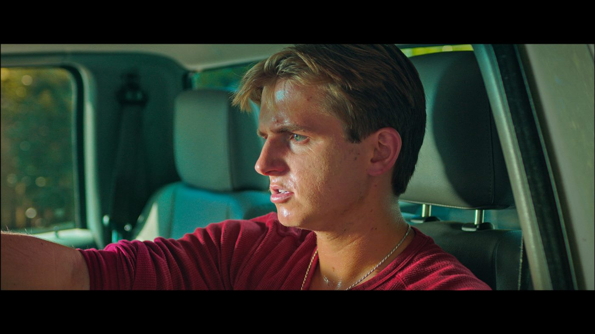
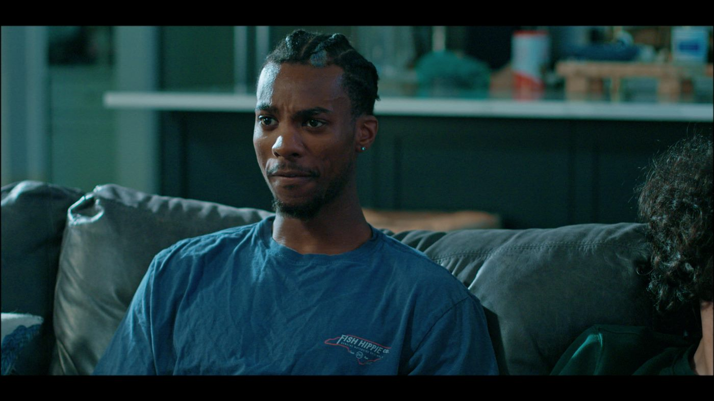
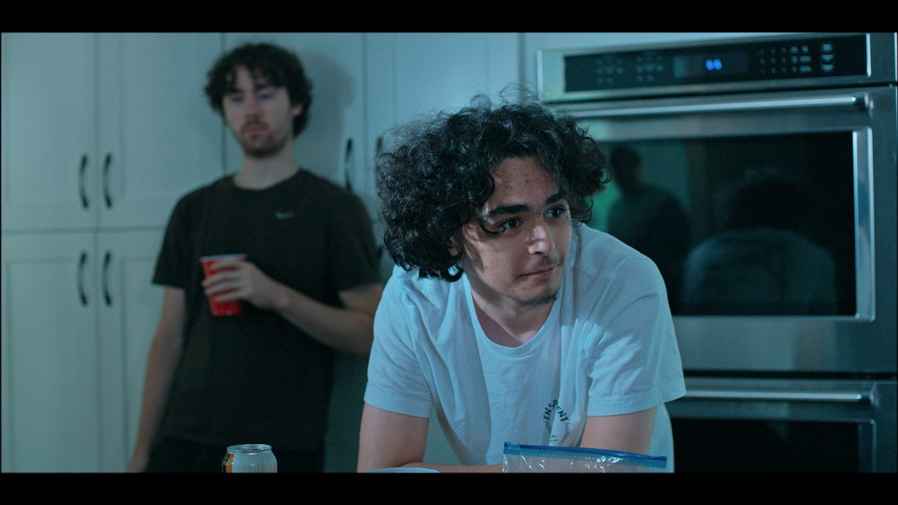
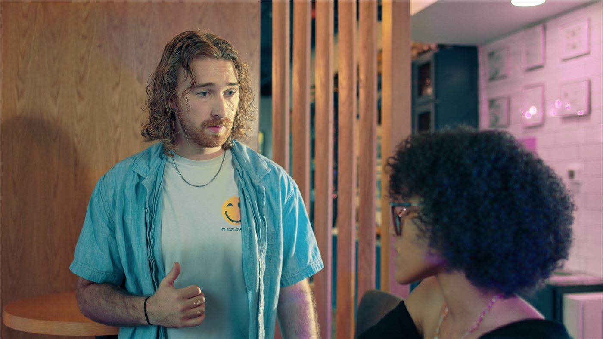
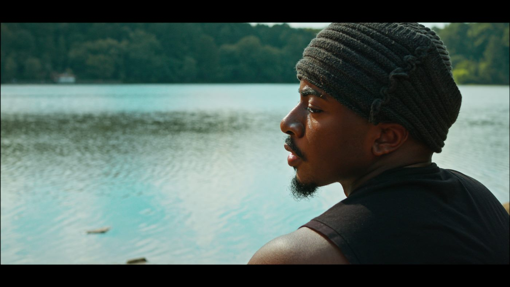
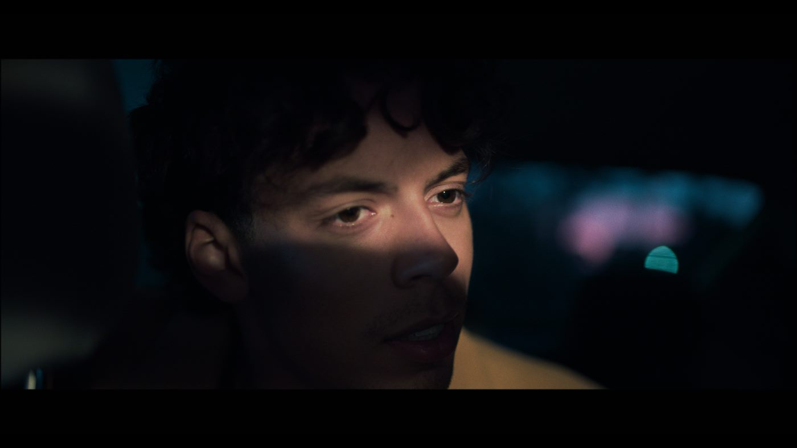
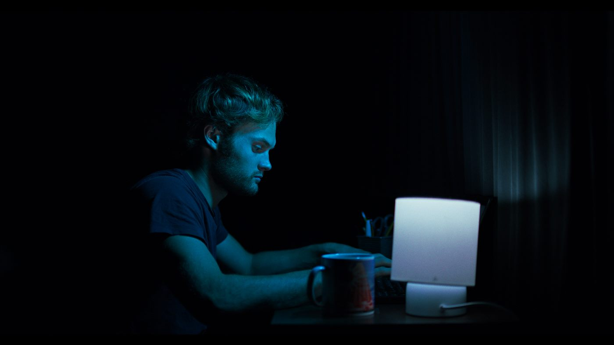
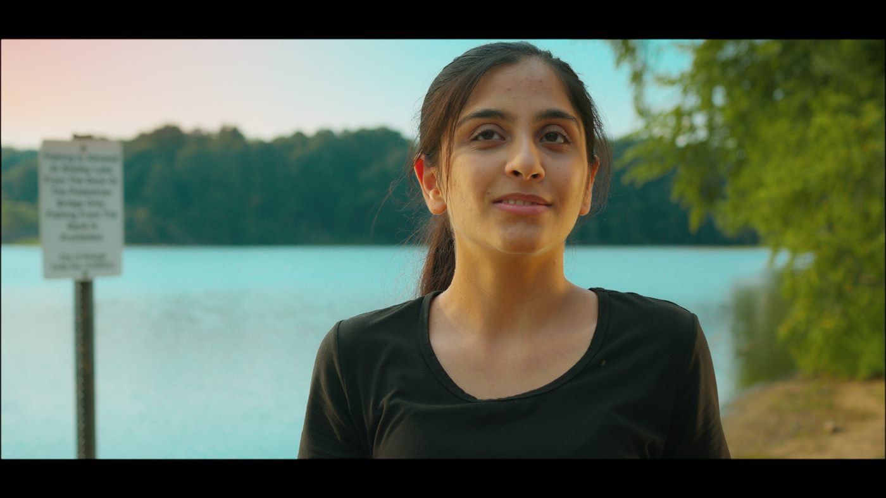
Also in the ABC Squad orbit: Brock Turismo (Isaac Corrigan), the wheelman, and Gemma Gazelle (Emily Kahl). Call sheets and actor guides run deeper than this grid.
World
Platform fiction.
Sidequest marketplace · K.U.M currency · XP · Quest Broker · Cyber Realm · Trojan Stallion · FBI Cyber Realm Taskforce.
A 136-page world bible and 187 pages of actor guides back the tone — heist comedy on the surface, cyber-horror mythology underneath, family tragedy at the core.
Spin-offs seeded: a Cain and Nelson crime drama, an FBI procedural, the Trojan Stallion origin, an ARG marketplace, interactive episodes, and merchandise.
Why the world bible matters to the company
A franchise bible is not a creative indulgence — it is the asset register. It is also what the IP workspace in Pure Alacrity was built to hold, which is a good example of a production problem becoming a software feature.
Status
Distribution-ready.
Shot in summer 2025 with additional photography that November. In post since.
Season 1 Part 1 principal
14 shoot days, dual-camera 4K, roughly $1,400 of on-set spend, 378 clips and 7.5 hours in the vault.
Release aim
Free streaming, with a branching pilot cut from the show’s own choice interface so discovery does not require a login wall.
Season 2 & spin-offs
More episodes as the audience finds the world — this time with the production software running the pipeline end to end, not only post.
A correction worth making
Sidequest was not made on Pure Alacrity. The software post-dates the shoot: this season is where its specification came from, and it runs the show’s post today. Built out of Sidequest, not for it.
Press Start.
Sidequest is the flagship. The software is what it forced us to build. Right Here Right Now! is the proof that branching ships.